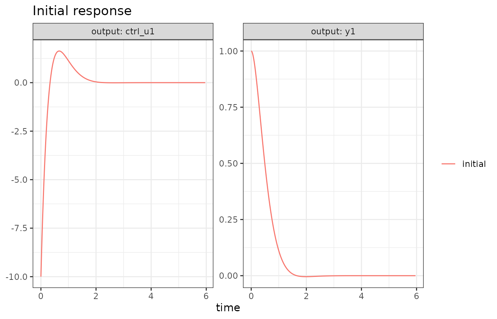
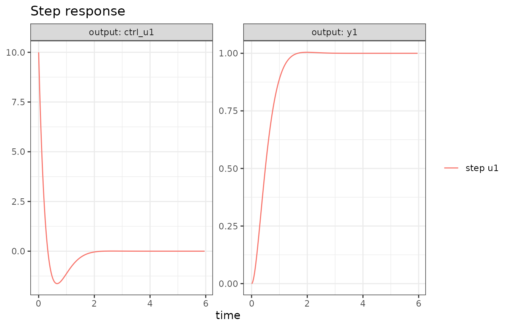

The linear quadratic regulator
For \dot x = Ax + Bu, the law u = -Kx with K = R^{-1}(B^\top P + N^\top), where P is the stabilizing solution of the continuous algebraic Riccati equation, minimizes J = \int_0^\infty x^\top Q x + u^\top R u + 2 x^\top N u \, dt . The conditions are checked: R \succ 0, the joint weight \begin{pmatrix} Q & N \\ N^\top & R\end{pmatrix} \succeq 0, (A, B) stabilizable, and no unobservable modes of the cost on the imaginary axis. The minimum is over stabilizing inputs; it is the unrestricted minimum when the cost detects every unstable mode. The optimality statement holds only for this linear model and this cost; it says nothing about constraints, model error or nonlinear plants.
plant <- ctrl_ss(matrix(c(0, 1, 0, 0), 2, byrow = TRUE), c(0, 1), c(1, 0),
state_names = c("position", "velocity"))
lqr <- ctrl_lqr(plant, Q = diag(c(1, 0.1)), R = 0.01)
lqr
#> LQR controller (continuous time), u = -K x
#> K =
#> position velocity
#> u1 10 5.477
#> closed-loop poles: -2.739+1.581i, -2.739-1.581i
#> Riccati residual: 2.18e-15The returned cost matrix gives the optimal cost from any initial state, J^\star = x_0^\top P x_0:
Closed-loop simulation
cl <- ctrl_closed_loop(plant, lqr)
plot(ctrl_initial(cl, x0 = c(1, 0)))
The closed loop has the plant outputs followed by the control signals, so the actuator effort is always visible.
Discrete and finite-horizon LQR
For discrete models ctrl_lqr() solves the discrete
Riccati equation. ctrl_dlqr_finite() computes the
time-varying gains of the finite-horizon problem by the backward Riccati
recursion; for long horizons the first gain converges to the
infinite-horizon gain:
Reference tracking
State feedback regulates to zero. To track a constant reference r, use u = N r - K
x with the static prefilter N that gives unit DC
gain (it exists when the plant has no zero at the origin):
N <- ctrl_reference_gain(plant, lqr)
N
#> [,1]
#> v_u1 10
plot(ctrl_step(ctrl_series(ctrl_gain(N), cl)))
A prefilter is not robust to model error: a constant disturbance or a gain mismatch leaves a steady-state offset. Integral action (augmenting the state with the integral of the error) or offset-free MPC removes it.
Pole placement
ctrl_place() computes K so that A - BK has prescribed eigenvalues, with the
robust eigenstructure assignment of Kautsky, Nichols and Van Dooren. For
several inputs the remaining freedom is used to make the closed-loop
eigenvectors as well conditioned as possible, and the condition number
is reported because it measures how fragile the placement is:
K <- ctrl_place(plant, poles = c(-2 + 1i, -2 - 1i))
K
#> [,1] [,2]
#> [1,] 5 4
#> attr(,"poles")
#> [1] -2+1i -2-1i
#> attr(,"cond_X")
#> [1] 5.828427
#> attr(,"max_error")
#> [1] 7.108896e-16
eigen(plant$A - plant$B %*% K)$values
#> [1] -2+1i -2-1i
attr(K, "cond_X")
#> [1] 5.828427
A3 <- matrix(c(0, 1, 0, 0, 0, 1, 1, -2, -3), 3, byrow = TRUE)
B3 <- matrix(c(0, 1, 0, 0, 0, 1), 3)
K3 <- ctrl_place(A3, B3, c(-1, -2, -3))
attr(K3, "cond_X")
#> [1] 6.162278Placing poles far to the left needs large gains, which amplify noise and saturate actuators. LQR often gives better compromises because the weights speak directly about states and inputs.